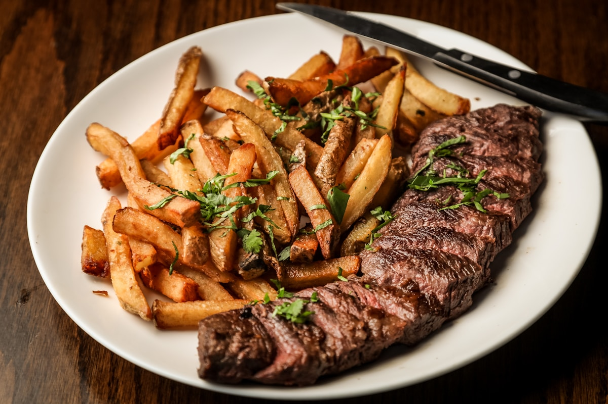
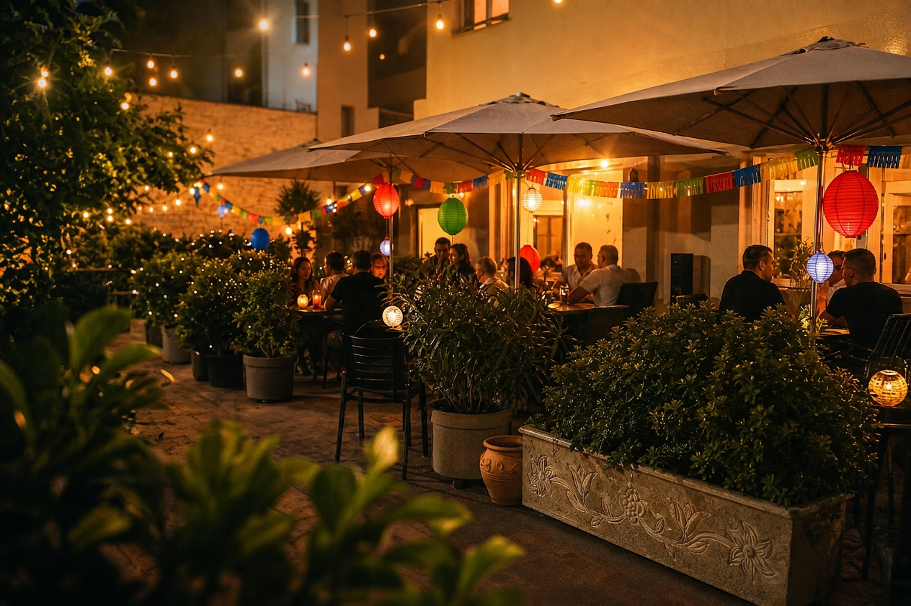

Producto de mercado
Pescados, verduras y carnes seleccionadas cada semana con criterio de temporada.
Restaurante espanol en Calella
Cocina mediterranea con alma espanola, producto de temporada y una atmosfera serena para disfrutar sin prisa.

Nuestra esencia
Rio de Gusto nace para reunir lo mejor de la costa catalana y la tradicion espanola: platos honestos, servicio cercano y una sala pensada para conversar, celebrar y volver.
Pescados, verduras y carnes seleccionadas cada semana con criterio de temporada.
Una carta flexible para comidas luminosas, cenas largas y sobremesas cuidadas.
Texturas naturales, vajilla sobria y pequenos acentos dorados en cada experiencia.
Opiniones de Google
Google · 4.8/5 · Restaurante Rio de Gusto
“Buen precio y buen servicio. Recomiendo.”
“Espectacular menús, la comida está buenísima.”
“El servicio es muy amable y la comida está llena de sabor.”
Rio de Gusto desde la calle
Ambiente en Calella
Interior sereno, materiales naturales y una seleccion de vinos pensada para acompanar el producto sin imponerse.

Reservas
Escribenos por WhatsApp y prepararemos una mesa para comida, cena o una celebracion especial en Calella.
Reservar por WhatsAppCalella, Barcelona
Mar - Dom · 13:00 - 23:30
+34 600 000 000
@riodegusto.restaurant
Ubicacion